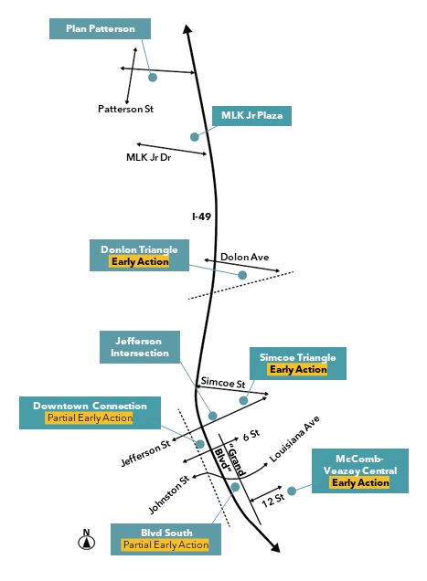

The Economic Action Plan builds on a year-long process of targeted stakeholder and community engagement, economic and technical research, and urban design and planning, integrating multiple past plans and ongoing investments to develop a comprehensive strategy for economic development along the proposed I-49 Connector project in Lafayette, LA.
A Shared Vision for Economic Revitalization
For neighborhoods along the Evangeline Corridor—the 3 miles adjacent to the I-49 Connector—the proposed infrastructural upgrade offers significant opportunities. Increased movement of goods and services will connect the area to broader markets, customers, and suppliers. Additionally, new infrastructure investments are expected to stimulate commerce, enhance the overall livability of the area, and bridge the divide caused by historical policies and projects in the community.
This Action Plan outlines strategies to coordinate public and private investments triggered by infrastructure improvements. It specifically addresses a range of land use, business development, and quality of life enhancements informed by multi-sector input, aiming to uplift communities holistically and equitably. Together, these initiatives will foster sustainable economic growth, improve the quality of life for residents, and chart a path for shared prosperity.
Get a copy of the plan!

Investments Should…
- Enhance Access to Economic Opportunities
- Ensure Quality Housing & Neighborhood Amenities
- Build Community Connections and Resilience
- Leverage and Strengthen Local Capacity
- Be Actionable and Allow For Early Implementation
Catalytic Projects to Reconnect the Communities
To help guide investments, the Action Plan organizes a series of initiatives around 8 catalytic projects at strategic locations along the Evangeline Corridor. Below is a summary of the project highlights. Together, these investments form a system of physical and programmatic improvements to stitch communities back together along the Corridor.
- Pedestrian access and flow: Integrating past/ongoing capital projects and envisioning additional safe crossings, sidewalks, and traffic calming features
- Design excellence: Increasing community buy-in and sustaining the momentum via commitment to high-quality design and construction
- Equitable development: Promoting inclusive growth with initiatives ranging from small business and workforce opportunities to food access and arts and culture
- Real estate investment: Planning for 1.5 million SF of new development ranging from mixed-use to infill projects, generating $371 million in direct investment, more than 2,000 construction jobs, and 5-fold increase in City-Parish property tax revenue on project sites
- Retail and business activities: Supporting $46 million annual business revenue and over 400 permanent jobs
- Housing production: Providing 945 new dwelling units of diverse typologies
- Open spaces: Connecting and beautifying the community with 19 acres of new parks, gathering spaces, and plazas
